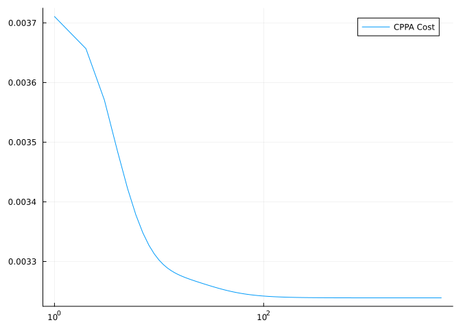

üèîÔ∏è Get started: optimize.
Ronny Bergmann
In this tutorial, we will both introduce the basics of optimisation on manifolds as well as how to use Manopt.jl to perform optimisation on manifolds in Julia.
For more theoretical background, see for example [Car92] for an introduction to Riemannian manifolds and [AMS08] or [Bou23] to read more about optimisation thereon.
Let $\mathcal M$ denote a Riemannian manifold and let $f\colon \mathcal M ‚Üí ‚Ñù$ be a cost function. We aim to compute a point $p^*$ where $f$ is minimal or in other words $p^*$ is a minimizer of $f$.
We also write this as
\[ \operatorname*{arg\,min}_{p ‚àà \mathcal M} f(p)\]
and would like to find $p^*$ numerically. As an example we take the generalisation of the (arithemtic) mean. In the Euclidean case with$d\in\mathbb N$, that is for $n\in \mathbb N$ data points $y_1,\ldots,y_n \in \mathbb R^d$ the mean
\[ \sum_{i=1}^n y_i\]
can not be directly generalised to data $q_1,\ldots,q_n$, since on a manifold we do not have an addition. But the mean can also be characterised as
\[ \operatorname*{arg\,min}_{x\in\mathbb R^d} \frac{1}{2n}\sum_{i=1}^n \lVert x - y_i\rVert^2\]
and using the Riemannian distance $d_\mathcal M$, this can be written on Riemannian manifolds. We obtain the Riemannian Center of Mass [Kar77]
\[ \operatorname*{arg\,min}_{p\in\mathcal M} \frac{1}{2n} \sum_{i=1}^n d_{\mathcal M}^2(p, q_i)\]
Fortunately the gradient can be computed and is
\[ \frac{1}{n} \sum_{i=1}^n -\log_p q_i\]
Loading the necessary packages
Let’s assume you have already installed both Manopt.jl and Manifolds.jl in Julia (using for example using Pkg; Pkg.add(["Manopt", "Manifolds"])). Then we can get started by loading both packages as well as Random.jl for persistency in this tutorial.
using Manopt, Manifolds, Random, LinearAlgebra
Random.seed!(42);Now assume we are on the Sphere $\mathcal M = \mathbb S^2$ and we generate some random points “around” some initial point $p$
n = 100
σ = π / 8
M = Sphere(2)
p = 1 / sqrt(2) * [1.0, 0.0, 1.0]
data = [exp(M, p, σ * rand(M; vector_at=p)) for i in 1:n];Now we can define the cost function $f$ and its (Riemannian) gradient $\operatorname{grad} f$ for the Riemannian center of mass:
f(M, p) = sum(1 / (2 * n) * distance.(Ref(M), Ref(p), data) .^ 2)
grad_f(M, p) = sum(1 / n * grad_distance.(Ref(M), data, Ref(p)));and just call gradient_descent. For a first start, we do not have to provide more than the manifold, the cost, the gradient, and a starting point, which we just set to the first data point
m1 = gradient_descent(M, f, grad_f, data[1])3-element Vector{Float64}:
0.6868392807355564
0.006531599748261925
0.7267799809043942In order to get more details, we further add the debug= keyword argument, which act as a decorator pattern.
This way we can easily specify a certain debug to be printed. The goal is to get an output of the form
# i | Last Change: [...] | F(x): [...] |but where we also want to fix the display format for the change and the cost numbers (the [...]) to have a certain format. Furthermore, the reason why the solver stopped should be printed at the end
These can easily be specified using either a Symbol when using the default format for numbers, or a tuple of a symbol and a format-string in the debug= keyword that is available for every solver. We can also, for illustration reasons, just look at the first 6 steps by setting a stopping_criterion=
m2 = gradient_descent(M, f, grad_f, data[1];
debug=[:Iteration,(:Change, "|Δp|: %1.9f |"),
(:Cost, " F(x): %1.11f | "), "\n", :Stop],
stopping_criterion = StopAfterIteration(6)
)Initial F(x): 0.32487988924 |
# 1 |Δp|: 1.063609017 | F(x): 0.25232524046 |
# 2 |Δp|: 0.809858671 | F(x): 0.20966960102 |
# 3 |Δp|: 0.616665145 | F(x): 0.18546505598 |
# 4 |Δp|: 0.470841764 | F(x): 0.17121604104 |
# 5 |Δp|: 0.359345690 | F(x): 0.16300825911 |
# 6 |Δp|: 0.274597420 | F(x): 0.15818548927 |
The algorithm reached its maximal number of iterations (6).
3-element Vector{Float64}:
0.7533872481682505
-0.06053107055583637
0.6547851890466334See here for the list of available symbols.
!!! info \"Technical Detail\" The debug= keyword is actually a list of DebugActions added to every iteration, allowing you to write your own ones even. Additionally, :Stop is an action added to the end of the solver to display the reason why the solver stopped.
The default stopping criterion for gradient_descent is, to either stop when the gradient is small (<1e-9) or a max number of iterations is reached (as a fallback). Combining stopping-criteria can be done by | or &. We further pass a number 25 to debug= to only an output every 25th iteration:
m3 = gradient_descent(M, f, grad_f, data[1];
debug=[:Iteration,(:Change, "|Δp|: %1.9f |"),
(:Cost, " F(x): %1.11f | "), "\n", :Stop, 25],
stopping_criterion = StopWhenGradientNormLess(1e-14) | StopAfterIteration(400),
)Initial F(x): 0.32487988924 |
# 25 |Δp|: 0.459715605 | F(x): 0.15145076374 |
# 50 |Δp|: 0.000551270 | F(x): 0.15145051509 |
The algorithm reached approximately critical point after 73 iterations; the gradient norm (9.988871119384563e-16) is less than 1.0e-14.
3-element Vector{Float64}:
0.6868392794788668
0.006531600680779286
0.7267799820836411We can finally use another way to determine the stepsize, for example a little more expensive ArmijoLineSeach than the default stepsize rule used on the Sphere.
m4 = gradient_descent(M, f, grad_f, data[1];
debug=[:Iteration,(:Change, "|Δp|: %1.9f |"),
(:Cost, " F(x): %1.11f | "), "\n", :Stop, 2],
stepsize = ArmijoLinesearch(M; contraction_factor=0.999, sufficient_decrease=0.5),
stopping_criterion = StopWhenGradientNormLess(1e-14) | StopAfterIteration(400),
)Initial F(x): 0.32487988924 |
# 2 |Δp|: 0.001318138 | F(x): 0.15145051509 |
# 4 |Δp|: 0.000000004 | F(x): 0.15145051509 |
# 6 |Δp|: 0.000000000 | F(x): 0.15145051509 |
The algorithm reached approximately critical point after 7 iterations; the gradient norm (5.073696618059386e-15) is less than 1.0e-14.
3-element Vector{Float64}:
0.6868392794788669
0.006531600680779358
0.7267799820836413Then we reach approximately the same point as in the previous run, but in far less steps
[f(M, m3)-f(M,m4), distance(M, m3, m4)]2-element Vector{Float64}:
1.6653345369377348e-16
1.727269835930624e-16Example 2: Computing the median of symmetric positive definite matrices.
For the second example let’s consider the manifold of $3 × 3$ symmetric positive definite matrices and again 100 random points
N = SymmetricPositiveDefinite(3)
m = 100
σ = 0.005
q = Matrix{Float64}(I, 3, 3)
data2 = [exp(N, q, σ * rand(N; vector_at=q)) for i in 1:m];Instead of the mean, let’s consider a non-smooth optimisation task: The median can be generalized to Manifolds as the minimiser of the sum of distances, see [Bac14]. We define
g(N, q) = sum(1 / (2 * m) * distance.(Ref(N), Ref(q), data2))g (generic function with 1 method)Since the function is non-smooth, we can not use a gradient-based approach. But since for every summand the proximal map is available, we can use the cyclic proximal point algorithm (CPPA). We hence define the vector of proximal maps as
proxes_g = Function[(N, λ, q) -> prox_distance(N, λ / m, di, q, 1) for di in data2];Besides also looking at a some debug prints, we can also easily record these values. Similarly to debug=, record= also accepts Symbols, see list here, to indicate things to record. We further set return_state to true to obtain not just the (approximate) minimizer.
s = cyclic_proximal_point(N, g, proxes_g, data2[1];
debug=[:Iteration," | ",:Change," | ",(:Cost, "F(x): %1.12f"),"\n", 1000, :Stop,
],
record=[:Iteration, :Change, :Cost, :Iterate],
return_state=true,
);Initial | | F(x): 0.005875512856
# 1000 | Last Change: 0.003704 | F(x): 0.003239019699
# 2000 | Last Change: 0.000015 | F(x): 0.003238996105
# 3000 | Last Change: 0.000005 | F(x): 0.003238991748
# 4000 | Last Change: 0.000002 | F(x): 0.003238990225
# 5000 | Last Change: 0.000001 | F(x): 0.003238989520
The algorithm reached its maximal number of iterations (5000).!!! note \"Technical Detail\" The recording is realised by RecordActions that are (also) executed at every iteration. These can also be individually implemented and added to the record= array instead of symbols.
First, the computed median can be accessed as
::: {.cell execution_count=14}{.julia .cell-code} median = getsolverresult(s)
3×3 Matrix{Float64}:
1.0 2.12236e-5 0.000398721
2.12236e-5 1.00044 0.000141798
0.000398721 0.000141798 1.00041:::
but we can also look at the recorded values. For simplicity (of output), lets just look at the recorded values at iteration 42
get_record(s)[42](42, 1.0569455859078755e-5, 0.0032525477393699808, [0.9998583866917463 0.00020988803126309463 0.0002895445818450748; 0.00020988803126309463 1.0000931572564795 0.0002084371501662463; 0.00028954458184510257 0.00020843715016627407 1.000070920743258])But we can also access whole series and see that the cost does not decrease that fast; actually, the CPPA might converge relatively slow. For that we can for example access the :Cost that was recorded every :Iterate as well as the (maybe a little boring) :Iteration-number in a semi-log-plot.
x = get_record(s, :Iteration, :Iteration)
y = get_record(s, :Iteration, :Cost)
using Plots
plot(x,y,xaxis=:log, label="CPPA Cost")
Literature
- [AMS08]
- P.-A. Absil, R. Mahony and R. Sepulchre. Optimization Algorithms on Matrix Manifolds (Princeton University Press, 2008), open access.
- [Bac14]
- M. Bačák. Computing medians and means in Hadamard spaces. SIAM Journal on Optimization 24, 1542–1566 (2014), arXiv: 1210.2145.
- [Bou23]
- N. Boumal. An Introduction to Optimization on Smooth Manifolds. First Edition (Cambridge University Press, 2023). Homepage to the book: nicolasboumal.net/book/index.html.
- [Car92]
- M. P. do Carmo. Riemannian Geometry. Mathematics: Theory & Applications (Birkhäuser Boston, Inc., Boston, MA, 1992); p. xiv+300.
- [Kar77]
- H. Karcher. Riemannian center of mass and mollifier smoothing. Communications on Pure and Applied Mathematics 30, 509–541 (1977).